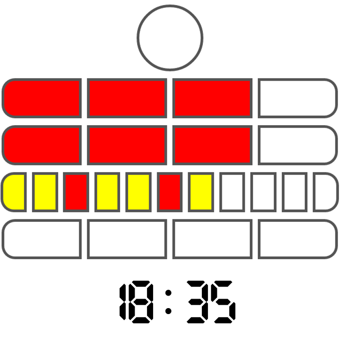

Berlin Clock Kata
Wix Grow Activity
Before we begin
- Join #berlin-clock-kata-2023.
- Prepare single JavaScript file.
- Prepare to execute your file using
nodein terminal. - Controls:
N, right, down- next slide,P, left, top- previous slide,Xexit presentation mode.

Berlin Clock (cont.)

- Round light blinks to denote odd (on) or even (off) seconds.
- 1st row denotes five full hours each. 2nd row denotes one hour each.
- 3rd row eleven lights, which denote five full minutes each.
- 4th row indicates one full.
Kata
A code kata is an exercise in programming which helps programmers hone their skills through practice and repetition.
Theme of the day
Purely functional style.
Constraints
- Only
const, nolet. - No re-assignment or mutation.
- Recursion for iteration.
- Avoid built-ins.
No re-assignment
array[0] = 1; object.x = 2;
No mutation
Given this
const a = [1, 2, 3];
None of this
a.push(4); a.reverse(); a.sort() a.splice(1, 3);
Destruct & construct
function withFirst(x, array) {
const [_, ...rest] = array;
return [x, ...rest];
}
function withKey(object, key, value) {
return { ...object, [key]: value };
}
Recursion to iterate
No for, while, or .forEach.
a.map(n => n + 1);
a.filter(n => n % 2);
a.reduce((acc, n) => acc + n);
function range(n, m) {
return new Array(m - n)
.fill(0)
.map((_, index) => n + index);
}
Bonus: avoid built-ins
function range(n, m) {
return n < m ? [n, ...range(n + 1, m)] : [];
}
function tail(xs) {
const [, ...rest] = xs;
return rest;
}
function reduce(fn, xs, acc) {
return xs.length > 0
? reduce(fn, tail(xs), fn(acc, xs[0]))
: acc;
}
function map(fn, xs) {
return reduce((acc, x) => [...acc, fn(x)], xs, []);
}
Ideas
- Higher order functions
Composition
join(' ', zipWith(call, [secondsBlock, minutesBlock, hoursBlock], reverse(parseTime(line))))Currying
thread(line, parseTime, zipWith(call, [secondsBlock, minutesBlock, hoursBlock]), join(' '))
Theme of the day 2
Object Oriented style.
Guidelines
- No naked operators.
- Extend built-in objects.
- Use built-in functionality.
- Replace built-in control flow.
No naked operators
No.
const x = a + 2; const y = z % 5;
Yes.
const x = a.add(2); const y = z.mod(5);
Extend built-ins.
Number.prototype.add = function (number) {
return this + number;
};
Number.prototype.times = function (fn) {
const r = [];
for (let i = 0; i < this; i++) {
r.push(fn(i));
}
return r;
};
(4).times((i) => i * 2) // => [ 0, 2, 4, 6 ]
Use built-in functionality
class Time {
constructor(h, m, s) {
this.hours = h;
this.minutes = m;
this.seconds = s;
}
toString() {
return [this.hours, this.minutes, this.seconds]
.map(number => number.toString().padStart(2, '0'))
.join(':')
}
}
"Time is " + new Time(12, 5, 1) // => Time is 12:05:01
Replace built-in control flow: if
Number.prototype.lessThan = function (n) {
return this < n;
}
Boolean.prototype.if = function (yes, no) {
return this.valueOf() ? yes() : no();
}
(5).lessThan(4).if(() => 'yay', () => 'ney')
Replace built-in control flow: for, while
// instead of for (5).upTo(10, (i) => console.log(i)) (5).downTo(1, (i) => console.log(i)) // while ?
Million bonus points
Think about the domain.
- Clock, Lights, Rows of Lights, Hours Rows, Minutes Rows, etc.
- Light can shine with
Xor|. - Clock can receive time, tell seconds, minutes, and hours to corresponding modules.
- Modules can choose which lights to turn on or off.
Example
class MinutesBlock {
row1 = (11).times((i) => (i).mod(3).eq(2).if(() => new PipeLight(), () => new XLight()))
row2 = (4).times(i => new XLight())
setMinutes(minutes) {
this.row1.forEach(light => light.off())
this.row2.forEach(light => light.off())
minutes.div(5).times((i) => this.row1[i].on())
minutes.mod(5).times((i) => this.row2[i].on())
}
toString() {
return this.row1.join('') + ' ' + this.row2.join('')
}
}
const mb = new MinutesBlock()
mb.setMinutes(33)
mb.toString() // => 'XX|XX|..... XXX.'
Specification
S H×5 H M×5 M
00:00:00 . .... .... ........... ....
00:00:01 X .... .... ........... ....
22:23:18 . XXXX XX.. XX|X....... XXX.
Template
require('readline')
.createInterface({ input: process.stdin })
.on('line', line => console.log(line + ' => ' + toBerlinClock(line)));
function toBerlinClock(line) {
return '. .... .... ........... ....';
}
$ echo 10:15:00 | node main.js 10:15:00 => . XX.. .... XX|........ .... $ node main.js < example.txt 00:00:00 => . .... .... ........... .... 23:59:59 => X XXXX XXX. XX|XX|XX|XX XXXX 18:48:02 => . XXX. XXX. XX|XX|XX|.. XXX.